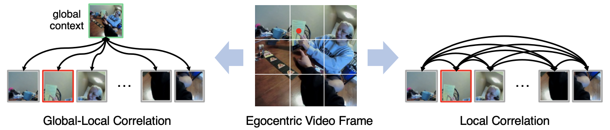
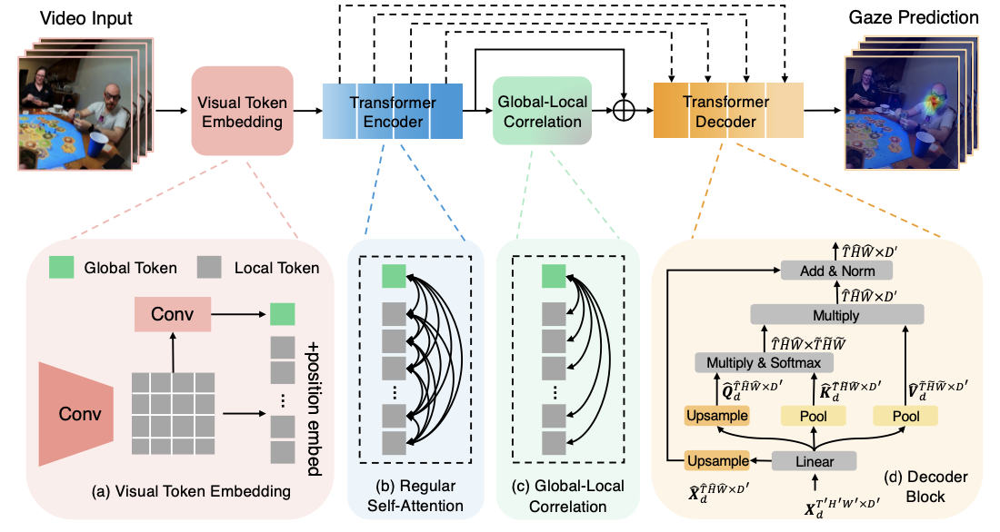
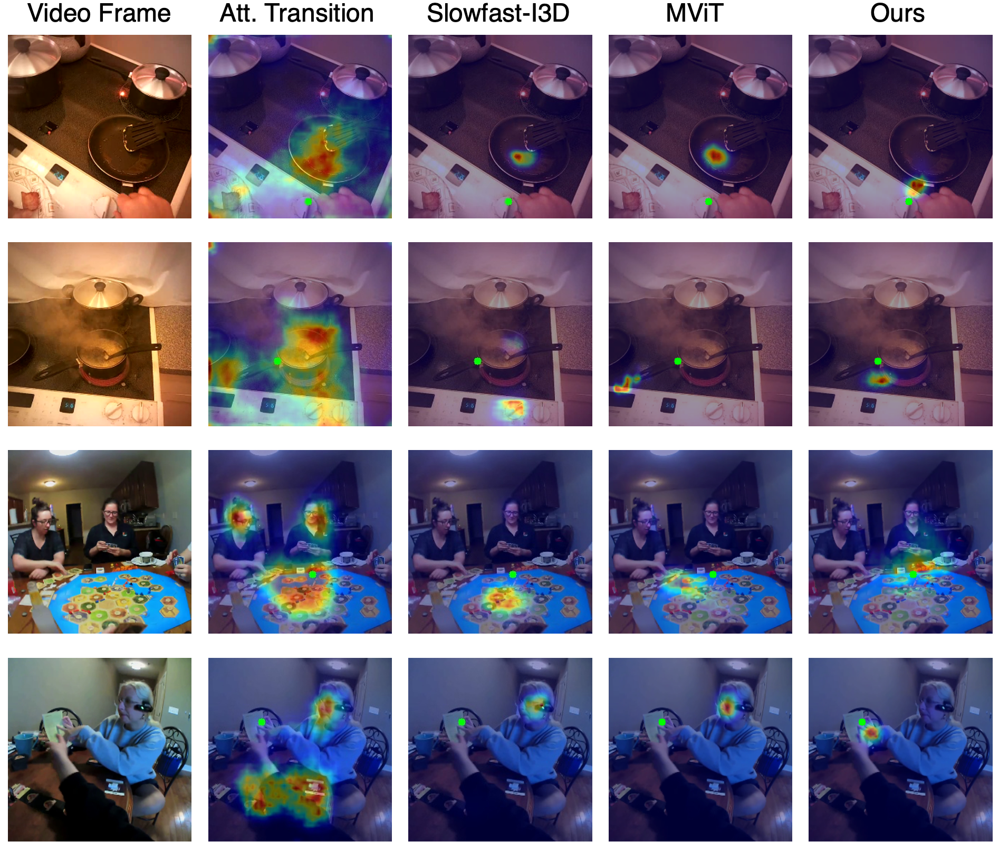
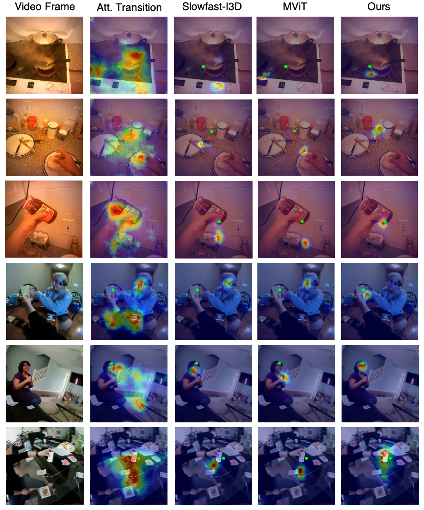

We have a new paper about egocentric gaze anticipation. You can find more details from our project page if you are interested.

Example of local correlation and global-local correlation for the task of egocentric gaze estimation (predicting where the camera-wearer is looking using egocentric video alone). The red dot represents the gaze ground truth (from a wearable eye tracker) and the image patch that contains the gaze target has red edges. Global-local correlation models the connections between the global context and each local patch, making it possible to capture, e.g., the camera wearer and social partner are pointing at the salient object. In contrast, local-local correlations may not yield an effective representation of the scene context.
Abstract
In this paper, we present the first transformer-based model to address the challenging problem of egocentric gaze estimation. We observe that the connection between the global scene context and local visual information is vital for localizing the gaze fixation from egocentric video frames. To this end, we design the transformer encoder to embed the global context as one additional visual token and further propose a novel Global-Local Correlation (GLC) module to explicitly model the correlation of the global token and each local token. We validate our model on two egocentric video datasets -- EGTEA Gaze+ and Ego4D. Our detailed ablation studies demonstrate the benefits of our method. In addition, our approach exceeds previous state-of-the-arts by a large margin. We also provide additional visualizations to support our claim that global-local correlation serves a key representation for predicting gaze fixation from egocentric videos.
The Proposed Method

Architecture of the proposed model. The model consists of four modules -- (a) Visual Token Embedding Module encodes the input into local tokens and one global token, (b) Transformer Encoder is composed of multiple regular self-attention and linear layers, (c) Global-Local Correlation Module models the correlation of global and local tokens, and (d) Transformer Decoder maps encoded video features from Transformer Encoder and GLC to gaze prediction.
Demo Video
Visualization
Examples

Additional Examples

BibTeX
@article{lai2022eye,
title={In the Eye of Transformer: Global-Local Correlation for Egocentric Gaze Estimation},
author={Lai, Bolin and Liu, Miao and Ryan, Fiona and Rehg, James},
journal={British Machine Vision Conference},
year={2022}
}
@article{lai2023eye,
title={In the eye of transformer: Global--local correlation for egocentric gaze estimation and beyond},
author={Lai, Bolin and Liu, Miao and Ryan, Fiona and Rehg, James M},
journal={International Journal of Computer Vision},
pages={1--18},
year={2023},
publisher={Springer}
}